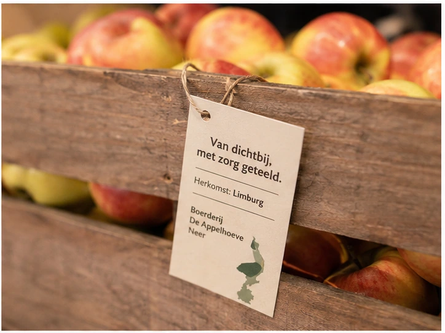
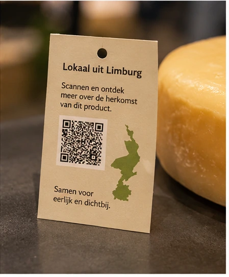

Korte ketens
Lokale producten kunnen de afstand tussen producent, groothandel en horeca verkleinen. Dat maakt herkomst tastbaarder en kan transportimpact beperken.
Duurzaamheid
Lokale producten zijn niet automatisch altijd duurzamer, maar ze bieden wel duidelijke kansen: kortere ketens, meer transparantie, betere aansluiting op het seizoen en een verhaal dat gasten bewuster laat kiezen.

Kortere keten
Wanneer producten dichter bij de regio worden ingekocht, kan de keten overzichtelijker worden. Dat maakt het makkelijker om herkomst uit te leggen, leveranciers zichtbaar te maken en bewuster te kiezen voor producten die passen bij het seizoen.
Een kortere route kan bijdragen aan minder transportkilometers en daarmee aan een kleinere CO₂-footprint. De exacte impact hangt altijd af van factoren zoals teeltwijze, logistiek, verpakking, koeling en schaalgrootte.
Ecologische voordelen

Lokale producten kunnen de afstand tussen producent, groothandel en horeca verkleinen. Dat maakt herkomst tastbaarder en kan transportimpact beperken.

Door vaker met producten uit het seizoen te werken, sluit de kaart beter aan op natuurlijke beschikbaarheid, smaak en versbeleving.

Herkomstkaartjes, QR-codes en leveranciersverhalen helpen ondernemers om gasten concreet te laten zien waar producten vandaan komen.

Met sampleboxen en proeverijen kunnen ondernemers eerst proberen wat past. Dat voorkomt willekeurige inkoop en helpt verspilling te beperken.

Bewuste kaartkeuzes
Duurzaamheid werkt pas echt wanneer producten ook praktisch inzetbaar zijn. Een lokaal product moet passen bij de keuken, het type gast en het tempo van de onderneming. Daarom draait deze omgeving niet alleen om aanbod, maar ook om recepten, combinaties en menukaartteksten.
Van impact naar gastbeleving
Begin met productgroepen die logisch zijn voor jouw zaak, zoals kaas, brood, groenten of borrelproducten.
Laat specials wisselen met de beschikbaarheid van lokale producten en houd de kaart actueel.
Gebruik korte menuteksten, tafelkaartjes of QR-codes om de maker zichtbaar te maken.
Kijk welke gerechten aanslaan, welke producten terugkomen en waar gasten positief op reageren.

Samen leren
Een proeverij of leveranciersdag maakt duurzaamheidskeuzes concreter. Ondernemers zien de producten, spreken makers en ontdekken direct toepassingen voor hun eigen kaart. Zo wordt duurzaamheid geen losse belofte, maar een praktisch onderdeel van inkoop, menuontwikkeling en gastcommunicatie.
Bekijk testimonialsAan de slag
Combineer lokale producten met seizoensrecepten, herkomstverhalen en herkenbare toepassingen op je menukaart.